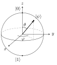

1 Qubits and measurement
Quantum information starts from the simplest quantum system: a two-level system, the qubit. This chapter introduces the Dirac notation and the Hilbert-space structure, defines the qubit through the superposition principle, states the Born rule for measurement and the collapse of the state, explains why global phases are unobservable, and pictures every qubit state as a point on the Bloch sphere. The Stern–Gerlach experiment illustrates all of it.
1.1 Kets, scalar products and Hilbert spaces
A quantum state is a vector in a complex vector space, written as a ket \(\ket\psi\). In a \(d\)-dimensional space with orthonormal basis \(\{\ket 0, \dots, \ket{d-1}\}\), \[\ket\psi = \sum_{k=0}^{d-1} \psi_k \ket k, \qquad \psi_k \in \mathbb C,\] represented by the column vector \((\psi_0, \dots, \psi_{d-1})^T\).
A scalar (inner) product assigns to each pair of vectors a complex number \(\braket{\phi|\psi}\) such that:
- \(\braket{\phi|\psi} = \braket{\psi|\phi}^*\) (conjugate symmetry);
- it is linear in the second argument: \(\braket{\phi|\,a\psi_1 + b\psi_2} = a\braket{\phi|\psi_1} + b\braket{\phi|\psi_2}\);
- \(\braket{\psi|\psi} \geq 0\), with equality iff \(\ket\psi = 0\).
In an orthonormal basis, \(\braket{\phi|\psi} = \sum_k \phi_k^* \psi_k\). The norm is \(\|\psi\| = \sqrt{\braket{\psi|\psi}}\).
A (finite-dimensional) Hilbert space \(\mathcal H\) is a complex vector space with a scalar product. (In infinite dimensions completeness must be added; we will rarely need it.)
The bra \(\bra\phi\) is the linear functional \(\ket\psi \mapsto \braket{\phi|\psi}\). It is the Hermitian conjugate of the ket: as a row vector, \(\bra\phi = (\ket\phi)^\dagger = (\phi_0^*, \dots, \phi_{d-1}^*)\). Conjugation is antilinear: \((a\ket\phi)^\dagger = a^* \bra\phi\).
The scalar product is then literally “bra times ket”: a row vector times a column vector.
1.2 The qubit
A qubit is a quantum system whose states live in a two-dimensional Hilbert space spanned by the computational basis \(\{\ket 0, \ket 1\}\). Its general state is a superposition \[\ket\psi = \alpha \ket 0 + \beta \ket 1, \qquad |\alpha|^2 + |\beta|^2 = 1 .\]
The superposition principle says any normalised linear combination of physical states is a physical state. This is what distinguishes a qubit from a classical bit, which is either \(0\) or \(1\). Physical realisations include the polarisation of a photon (\(\ket H, \ket V\)), the spin of an electron or nucleus (\(\ket\uparrow, \ket\downarrow\)), two levels of an atom or ion, two charge or flux states of a superconducting circuit, or two time bins of a photon.
Normalisation \(\braket{\psi|\psi} = 1\) is the physicality condition, because the coefficients have a probabilistic meaning.
1.3 Measurement and the Born rule
Measuring a qubit in state \(\ket\psi\) in the orthonormal basis \(\{\ket{e_0}, \ket{e_1}\}\) gives outcome \(k\) with probability \[p_k = |\braket{e_k|\psi}|^2 \qquad \text{(Born rule)}.\] Immediately after the measurement the state is \(\ket{e_k}\): the state collapses onto the basis vector corresponding to the observed outcome.
In the computational basis, \(p_0 = |\alpha|^2\) and \(p_1 = |\beta|^2\); normalisation guarantees \(p_0 + p_1 = 1\). Two features are essential:
- the outcome is intrinsically random — not because of ignorance of hidden details, but as a law of nature (this is the resource exploited by quantum random number generators, Chapter 10);
- measurement disturbs the state: repeating the same measurement gives the same outcome, but the original superposition is lost.
The same rule works in \(d\) dimensions: for \(\ket\psi = \sum_k \psi_k \ket k\) and a measurement in basis \(\{\ket{e_j}\}\), \(p_j = |\braket{e_j|\psi}|^2\) and the post-measurement state is \(\ket{e_j}\).
Let \(\ket\pm = (\ket 0 \pm \ket 1)/\sqrt 2\). The state \(\ket\psi = \alpha\ket 0 + \beta\ket 1\) measured in \(\{\ket +, \ket -\}\) gives \[p_\pm = |\braket{\pm|\psi}|^2 = \tfrac12|\alpha \pm \beta|^2 .\] For \(\ket\psi = \ket 0\) both outcomes have probability \(\tfrac12\): a state perfectly definite in one basis is maximally random in the other. The bases \(\{\ket 0, \ket 1\}\) and \(\{\ket +, \ket -\}\) are mutually unbiased.
1.4 Global phases
For any real \(\gamma\), the vectors \(\ket\psi\) and \(e^{i\gamma}\ket\psi\) give identical probabilities for every measurement, \(|\braket{e|e^{i\gamma}\psi}|^2 = |\braket{e|\psi}|^2\). They represent the same physical state: physical states are rays in \(\mathcal H\), not vectors. A relative phase, on the other hand, is physical: \(\ket +\) and \(\ket -\) differ only by the relative sign of \(\ket 1\), yet they are orthogonal and perfectly distinguishable by a measurement in the \(\{\ket\pm\}\) basis.
\(\ket 1\) and \(i\ket 1\) are the same state (\(i = e^{i\pi/2}\)). \(\tfrac{1}{\sqrt 2}(\ket 0 - \ket 1)\) and \(\tfrac{1}{\sqrt 2}(\ket 1 - \ket 0)\) are the same (factor \(-1\)). \(\tfrac{1}{\sqrt2}(\ket 0 + i\ket 1)\) and \(\tfrac{1}{\sqrt2}(i\ket 0 - \ket 1) = \tfrac{i}{\sqrt2}(\ket 0 + i \ket 1)\) are the same. But \(\tfrac{1}{\sqrt2}(\ket 0 + \ket 1)\) and \(\tfrac{1}{\sqrt 2}(-\ket 0 + i\ket 1)\) are different: in the \(\{\ket\pm\}\) basis the first gives \(p_+ = 1\), the second \(p_+ = \tfrac12\).
1.5 The Bloch sphere
Using normalisation and the freedom of the global phase, every qubit state can be written as \[\ket\psi = \cos\frac\theta2\,\ket 0 + e^{i\varphi}\sin\frac\theta2\,\ket 1, \qquad \theta \in [0, \pi],\ \varphi \in [0, 2\pi).\] The two angles identify a point on the unit sphere, the Bloch sphere, with Cartesian coordinates \[\vec r = (\sin\theta\cos\varphi,\ \sin\theta\sin\varphi,\ \cos\theta).\]

Figure: the Bloch sphere. Poles: \(\ket 0\) and \(\ket 1\); on the equator, \(\ket\pm\) along \(\pm x\) and \(\ket{\pm i}\) along \(\pm y\).
Key facts:
- the north and south poles are \(\ket 0\) and \(\ket 1\); the equator contains the equal superpositions, with \(\ket\pm\) on the \(\pm x\) axis and \(\ket{\pm i} = (\ket 0 \pm i\ket 1)/\sqrt2\) on the \(\pm y\) axis;
- orthogonal states are antipodal: the overlap of two pure states with Bloch vectors \(\vec r, \vec s\) is \(|\braket{\psi|\phi}|^2 = \tfrac12(1 + \vec r\cdot\vec s)\), which vanishes iff \(\vec s = -\vec r\) (proved in Chapter 3);
- the angle \(\theta/2\) in Hilbert space becomes \(\theta\) on the sphere: orthogonal vectors (angle \(\pi/2\) in \(\mathcal H\)) are at angle \(\pi\) on the sphere.
The Bloch sphere contains all the information about a qubit and no redundancy, yet it is two-dimensional: a qubit has infinitely many states but a single measurement yields only one bit. Chapter 9 makes this precise (Holevo’s bound).
1.6 The Stern–Gerlach experiment
A beam of silver atoms (spin \(\tfrac12\)) crossing an inhomogeneous magnetic field along \(z\) splits into two beams, corresponding to the outcomes \(\pm\tfrac\hbar2\) of the spin component \(S_z\): a measurement in the basis \(\{\ket{\uparrow_z}, \ket{\downarrow_z}\} \equiv \{\ket 0, \ket 1\}\).
- Block the lower beam: the atoms leaving the first magnet are in \(\ket{\uparrow_z}\). A second \(z\)-magnet sends all of them up — repeated measurements agree.
- Replace the second magnet with one oriented along \(x\), which measures in \(\{\ket{\uparrow_x}, \ket{\downarrow_x}\} = \{\ket +, \ket -\}\): the beam splits \(50/50\), since \(|\braket{\pm|0}|^2 = \tfrac12\).
- Select the \(\ket{\uparrow_x}\) atoms and measure \(z\) again: the beam splits \(50/50\). The \(x\)-measurement has erased the earlier \(z\) information — the state collapsed to \(\ket +\), which has no memory of having been \(\ket 0\).
The experiment shows quantised outcomes, intrinsic randomness, collapse, and the incompatibility of measurements along different axes (Chapter 4).
1.7 Exercises
For each state–basis pair, give the outcome probabilities: (a) \(\tfrac{\sqrt3}{2}\ket 0 - \tfrac12\ket 1\) in \(\{\ket 0, \ket 1\}\); (b) \(\tfrac{1}{\sqrt2}(\ket 0 - \ket 1)\) in \(\{\ket{+i}, \ket{-i}\}\); (c) \(\ket +\) in \(\{\tfrac{\sqrt3}{2}\ket 0 - \tfrac12\ket 1,\ \tfrac12\ket 0 + \tfrac{\sqrt 3}{2}\ket 1\}\).
Solution.
- \(p_0 = \tfrac34\), \(p_1 = \tfrac14\). (b) With \(\bra{\pm i} = (\bra 0 \mp i\bra 1)/\sqrt2\), \(\braket{\pm i|\psi} = \tfrac12(1 \pm i)\), so \(p_{+i} = p_{-i} = \tfrac12\): \(\ket -\) lies on the equator at \(90°\) from both \(\ket{\pm i}\). (c) \(\braket{\phi_0|+} = \tfrac{1}{\sqrt2}(\tfrac{\sqrt3}{2} - \tfrac12)\), so \(p_0 = \tfrac12 \cdot \tfrac{(\sqrt3 - 1)^2}{4} = \tfrac{2 - \sqrt3}{4}\) and \(p_1 = \tfrac{2 + \sqrt 3}{4}\).
Find \(\theta\) and \(\varphi\) for the states \(\ket -\), \(\ket{-i}\) and \(\tfrac{1}{\sqrt 2}(\ket 0 + e^{i\pi/4}\ket 1)\), and locate them on the Bloch sphere.
Solution. All three have \(\theta = \pi/2\) (equal weights): they lie on the equator. \(\ket -\): \(\varphi = \pi\) (\(-x\) axis). \(\ket{-i}\): \(\varphi = 3\pi/2\) (\(-y\) axis). The third: \(\varphi = \pi/4\), halfway between \(+x\) and \(+y\).
1.8 Sources
Prof. Vallone, Quantum Information and Computing, lecture 2 (kets, scalar product, Hilbert space, qubit, Born rule, global phase, collapse, Bloch sphere; Stern–Gerlach homework) and homework 0.1 (exercises 3–4). Nielsen & Chuang, Sections 1.2 and 2.1–2.2. Benenti, Casati & Strini, Vol. I, Chapters 2–3.